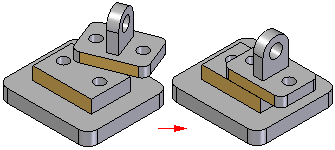

About the Planar Align relationship
(Home tab→Assemble group→Planar Align)
As shown next, a Planar Align relationship is used to ensure that the planar face of a placement part moves to remain parallel to and facing in the same direction as the planar face of the previously placed part.

When establishing relationships between parts that are already in the assembly workspace, the planar face on the first selected part moves to form the parallel alignment with the second selected face. Therefore the order of selection makes a difference for which part moves.
The faces can be coplanar or offset from each other in a similar way as in a Mate relationship (see Modify the offset value for a Mate relationship). When a floating offset is defined, another relationship controls the offset distance.

A Planar Align relationship can be applied to position a part with respect to an element in a part, subassembly, or top-level assembly sketch.
When a Planar Align relationship conflicts with other relationships, Solid Edge will attempt to apply a Mate relationship.
How do I
Using the Mate commandModify the offset value for a Mate relationship
Using the Planar Align command
Apply an axial align relationship
Insert a part in an assembly
Apply a connect relationship
Using the Angle command
Using the Tangent command
Place a cam relationship
Apply a path relationship
Using the Parallel command
Apply a gear relationship
Using the Center-Plane command
Place a Rigid Set relationship
Using the Ground command
Update the working environment
Learn more
Assembly Relationships ManagerLook up more details
About the FlashFit relationshipAbout the Mate relationship
About the Axial Align relationship
About the Insert relationship
About the Connect relationship
About the Angle relationship
About the Tangent relationship
About the Cam relationship
About the Path relationship
About the Parallel relationship
About the Gear relationship
Position two parts by matching their coordinate systems
About the Match Coordinate Systems relationship
About the Center-Plane relationship
About the Rigid Set relationship
About the Ground relationship
Update Relationships command